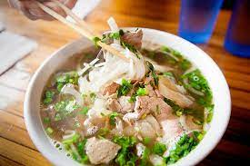

Pho

Pho is a delicious Vietnamese noodle soup known for its complex, aromatic broth. Here's a list of ingredients and a step-by-step list of instructions to make a classic beef pho:
Ingredients
- 4-5 pounds of beef bones (marrow and knuckle bones are ideal)
- 1 onion, peeled and halved
- 3-4-inch piece of ginger, sliced and smashed
- 2 cinnamon sticks
- 3-4 star anise pods
- 3-4 cloves
- 1 cardamom pod
- 1 black cardamom pod (optional)
- 1-2 tablespoons of coriander seeds
- 1-2 tablespoons of fennel seeds
- 1-2 tablespoons of rock sugar or regular sugar
- 1-2 tablespoons of salt
- 5-6 quarts of water
- 1 pound of rice noodles
- 1 pound of thinly sliced raw beef (eye of round, sirloin, or flank steak)
- 1 small onion, thinly sliced
- 4-5 green onions, sliced
- Bean sprouts (optional)
- Fresh Thai basil leaves
- Fresh cilantro sprigs
- Lime wedges
- Hoisin sauce
- Sriracha or chili sauce (optional)
Instructions
- Preheat your broiler to high. Place the halved onion and ginger slices on a baking sheet, and broil for 15-20 minutes until they become charred. You can also do this over an open flame if you have a gas stove.
- In a large stockpot, add the beef bones and enough water to cover them. Bring to a boil, then let it simmer for about 2-3 minutes. Drain and rinse the bones thoroughly.
- Return the bones to the pot and add about 5-6 quarts of water. Bring it to a boil and then reduce the heat to a gentle simmer. Add the charred onion, ginger, and all the spices (cinnamon, star anise, cloves, cardamom, coriander, fennel), along with the sugar and salt.
- As the broth simmers, you'll notice impurities rising to the surface. Skim off these impurities with a fine-mesh strainer or ladle. Simmer the broth for at least 6 hours, but longer if possible (8-12 hours) for the best flavor.
- Cook the rice noodles according to the package instructions, then rinse them under cold water to stop the cooking process.
- Thinly slice the raw beef. It will cook in the hot broth when served.
- When the broth is ready, strain it through a fine-mesh strainer to remove all solids. Adjust the seasoning with more salt and sugar if needed. Place a portion of cooked noodles in each serving bowl, then add slices of raw beef.
- Ladle the hot broth over the beef and noodles. The hot broth will cook the raw beef. Serve with sliced onions, green onions, bean sprouts, Thai basil, cilantro, lime wedges, hoisin sauce, and Sriracha or chili sauce on the side.
- Pho is traditionally eaten with a variety of condiments and herbs. Customize your bowl to your taste.